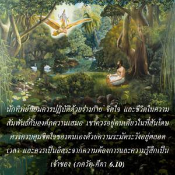
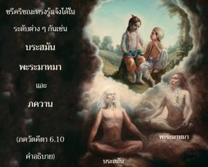

นักทิพย์นิยมควรปฏิบัติด้วยร่างกาย จิตใจ และชีวิตในความสัมพันธ์กับองค์ภควานฺเสมอ เขาควรอยู่คนเดียวในที่สันโดษ ควรควบคุมจิตใจของตนเองด้วยความระมัดระวังอยู่ตลอดเวลา และควรเป็นอิสระจากความต้องการและความรู้สึกเป็นเจ้าของ


องค์ ศฺรีกฺฤษฺณ ทรงรู้แจ้งได้ในระดับต่างๆ กัน เช่น พฺรหฺมนฺ ปรมาตฺมา และ ภควานฺ กฺฤษฺณจิตสำนึกหมายความอย่างตรงประเด็นว่า ปฏิบัติตนในการรับใช้ทิพย์ด้วยความรักแด่องค์ภควานฺอยู่เสมอ แต่พวกที่ยึดติดกับ พฺรหฺมนฺ อันไร้รูปลักษณ์ หรือองค์อภิวิญญาณผู้ทรงประทับอยู่ภายในหัวใจก็เป็นส่วนหนึ่งของกฺฤษฺณจิตสำนึกเช่นกัน เพราะ พฺรหฺมนฺ อันไร้รูปลักษณ์เป็นรัศมีทิพย์ขององค์กฺฤษฺณ และอภิวิญญาณทรงเป็นส่วนที่แยกออกมาจากองค์กฺฤษฺณ ซึ่งแผ่กระจายไปทั่ว ดังนั้น ผู้ไม่เชื่อในรูปลักษณ์ และนักปฏิบัติสมาธิก็มีกฺฤษฺณจิตสำนึกทางอ้อมเช่นกัน บุคคลในกฺฤษฺณจิตสำนึกโดยตรงเป็นนักทิพย์นิยมสูงสุด เพราะสาวกเช่นนี้ทราบว่า พฺรหฺมนฺ และ ปรมาตฺมา หมายความว่า ความรู้แห่งสัจธรรมของเขานั้นสมบูรณ์ ในขณะที่ผู้ไม่เชื่อในรูปลักษณ์ และโยคีผู้ทำสมาธิมีกฺฤษฺณจิตสำนึกที่ไม่สมบูรณ์
อย่างไรก็ดี ได้มีการแนะนำไว้ตรงนี้ทั้งหมดว่า ให้เราปฏิบัติในสายงานอาชีพของตนเองอยู่เสมอ เพื่อเราอาจไปถึงจุดสมบูรณ์สูงสุดได้ในไม่ช้าก็เร็ว ภารกิจข้อแรกของนักทิพย์นิยม คือ ตั้งจิตอยู่ที่องค์กฺฤษฺณเสมอ เขาควรระลึกถึงองค์กฺฤษฺณอยู่เสมอ และไม่ลืมพระองค์แม้แต่เสี้ยววินาทีเดียว การตั้งจิตอยู่ที่องค์ภควานฺเรียกว่า สมาธิ เพื่อให้จิตตั้งมั่นเขาควรดำรงอยู่อย่างสันโดษเสมอ และหลีกเลี่ยงการรบกวนจากอายตนะภายนอก เขาควรระมัดระวังอย่างยิ่งในการรับเอาสภาวะที่เอื้อประโยชน์ และปฏิเสธสภาวะที่ไม่เอื้อประโยชน์ที่จะมีผลกระทบต่อความรู้แจ้งแห่งตน และด้วยความมั่นใจอย่างสมบูรณ์ เขาไม่ควรทะเยอทะยานกับสิ่งของวัตถุที่ไม่จำเป็น ซึ่งจะพันธนาการตนเองด้วยความรู้สึกเป็นเจ้าของ
ความสมบูรณ์และข้อควรระวังทั้งหมดนี้ปฏิบัติได้อย่างสมบูรณ์เมื่ออยู่ในกฺฤษฺณจิตสำนึกโดยตรง เพราะว่ากฺฤษฺณจิตสำนึกโดยตรง หมายถึง การสละทิ้งตนเอง จึงเปิดโอกาสน้อยมากที่จะเป็นเจ้าของวัตถุ ศฺรีล รูป โคสฺวามี แสดงลักษณะของกฺฤษฺณจิตสำนึกไว้ดังนี้
อะนาสักตัสยะ วิษะยาน, ยะถารหัม อุปะยุญชะตะห์
นิรพันธะห์ กฤษณะ-สัมพันเธ, ยุกตัม ไวราคยัม อุจยะเต
ปฺราปญฺจิกตยา พุทฺธฺยา
หริ-สมฺพนฺธิ-วสฺตุนห์
มุมุกฺษุภิห์ ปริตฺยาโค
ไวราคฺยํ ผลฺคุ กถฺยเต
“เมื่อเขาไม่ยึดติดกับสิ่งใด แต่ในขณะเดียวกันยอมรับทุกสิ่งทุกอย่างในความสัมพันธ์กับองค์กฺฤษฺณ เขาสถิตอย่างถูกต้องเหนือความเป็นเจ้าของ อีกด้านหนึ่งผู้ที่ปฏิเสธทุกสิ่งทุกอย่างโดยไม่รู้ถึงความสัมพันธ์ระหว่างทุกสิ่งทุกอย่างกับองค์กฺฤษฺณนั้น การเสียสละของบุคคลนี้ถือว่าไม่สมบูรณ์” (ภกฺติ-รสามฺฤต-สินฺธุ 1.2.255-256)
บุคคลผู้มีกฺฤษฺณจิตสำนึกทราบดีว่าทุกสิ่งทุกอย่างเป็นขององค์กฺฤษฺณ ดังนั้น เขาจึงเป็นอิสระจากความรู้สึกเป็นเจ้าของส่วนตัวอยู่เสมอ เขาไม่มีความทะเยอทะยานไม่ว่าสิ่งใดๆ สำหรับส่วนตัว เขาทราบว่าควรรับเอาสิ่งต่างๆ มาส่งเสริมในกฺฤษฺณจิตสำนึกได้อย่างไร และทราบว่าควรปฏิเสธกับสิ่งที่ไม่ส่งเสริมในกฺฤษฺณจิตสำนึก เขาปลีกตัวออกห่างจากสิ่งของวัตถุเสมอ เพราะว่าเขาจะอยู่ในระดับทิพย์เสมอ เขาจะอยู่อย่างสันโดษเสมอ โดยไม่มีอะไรเกี่ยวข้องกับบุคคลผู้ที่ไม่มีกฺฤษฺณจิตสำนึก ฉะนั้น บุคคลในกฺฤษฺณจิตสำนึกจึงเป็นโยคีที่สมบูรณ์